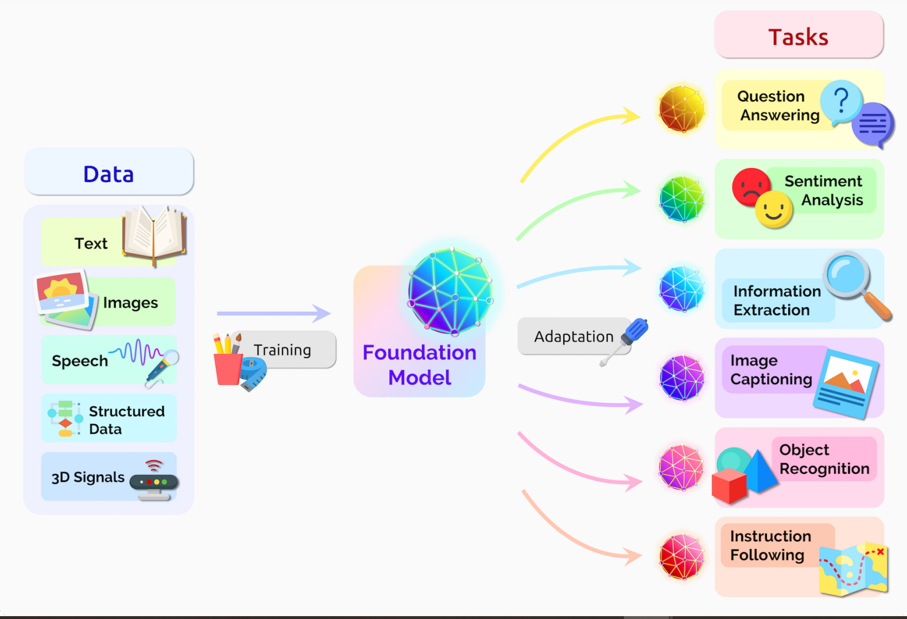

Ubicación
Ver aplicaciones de la inteligencia artificial generativa
El machine learning se puede aplicar a diversos dominios y problemas, desde el comercio electrónico hasta la medicina, pasando por la educación, la agricultura, la seguridad, y más. Por lo tanto, no hay una ubicación específica para el machine learning, sino que se puede desarrollar y usar en cualquier lugar donde haya datos disponibles y una necesidad de resolver una tarea compleja o mejorar un proceso existente.
Unas de las aplicaciones de la inteligencia artificial generativa
La inteligencia artificial generativa es un tipo de inteligencia artificial que puede crear ideas y contenidos nuevos, como conversaciones, historias, imágenes, videos y música
-
Traducción automática:
Los transformers pueden traducir texto y habla casi en tiempo real, lo que permite el acceso a reuniones y aulas para diversos asistentes con discapacidades auditivas
-
Descubrimiento de fármacos:
Los transformers pueden ayudar a los investigadores a comprender las cadenas de genes en el ADN y los aminoácidos en proteínas de formas que pueden acelerar el diseño de fármacos.
-
Detección de anomalías:
Los transformers pueden detectar tendencias y anomalías para prevenir fraudes, optimizar la manufactura, hacer recomendaciones en línea o mejorar el área de la salud.
-
Generación de lenguaje natural:
Los transformers pueden crear contenido de texto coherente y relevante para una variedad de dominios y tareas, como chatbots, asistentes personales y escritura creativa.